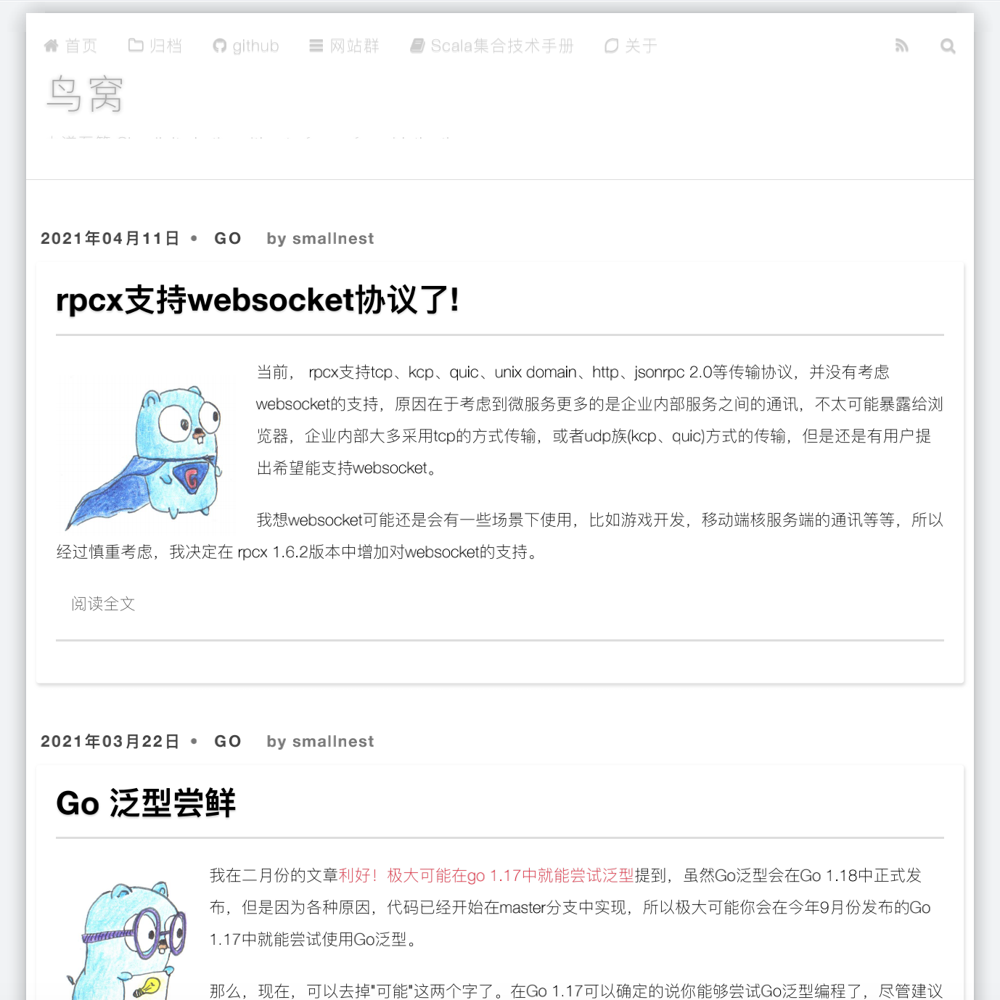
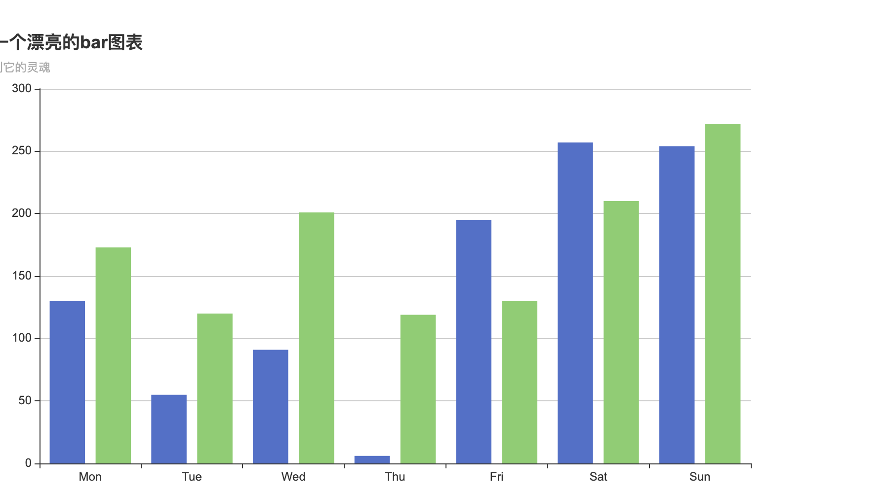

chromedp是一个更快更简单的支持Chrome DevTools Protocol协议的Go库，它是目前最流行的headless浏览器库之一，你可以使用它做很多只能通过浏览器才能执行的任务，比如网页截屏、网页渲染测试、下载视频、模拟登录等，今天我介绍它的一个有用而且很简单的功能：为一个网页生成一个pdf格式的截屏,更多的例子你可以查看官方示例chromedp/examples。
首先有一点，你需要安装chrome，这样chromedp库才能通过cdp协议调用chrome执行任务(动作)。
为网页生成pdf
首先，你需要引入chromedp库：
1
| go get -u github.com/chromedp/chromedp
|
然后，你就可以通过chromedp.Run执行一系列的动作，比如我们这个例子就是先导航到某个页面，然后将页面生成为pdf:
1 2 3 4 5 6 7 8 9 10 11 12 13 14
| func printToPDF(urlstr string, res *[]byte) chromedp.Tasks { return chromedp.Tasks{ chromedp.Navigate(urlstr), chromedp.ActionFunc(func(ctx context.Context) error { buf, _, err := page.PrintToPDF().WithPrintBackground(true).Do(ctx) if err != nil { return err } *res = buf return nil }), } }
|
ActionFunc是一个便利的方法，用来执行一个函数作为Action,就像标准库http.Handler和http.HandleFunc的关系。因为这里我们要执行的逻辑比较简单，所以就通过一个函数实现就可以了。
page.PrintToPDF()是定义要执行输出pdf的一些参数,你可以额外设置一些参数，这些参数包括：
1 2 3 4 5 6 7 8 9 10 11 12 13 14 15 16 17 18
| type PrintToPDFParams struct { Landscape bool `json:"landscape,omitempty"` DisplayHeaderFooter bool `json:"displayHeaderFooter,omitempty"` PrintBackground bool `json:"printBackground,omitempty"` Scale float64 `json:"scale,omitempty"` PaperWidth float64 `json:"paperWidth,omitempty"` PaperHeight float64 `json:"paperHeight,omitempty"` MarginTop float64 `json:"marginTop"` MarginBottom float64 `json:"marginBottom"` MarginLeft float64 `json:"marginLeft"` MarginRight float64 `json:"marginRight"` PageRanges string `json:"pageRanges,omitempty"` IgnoreInvalidPageRanges bool `json:"ignoreInvalidPageRanges,omitempty"` HeaderTemplate string `json:"headerTemplate,omitempty"` FooterTemplate string `json:"footerTemplate,omitempty"` PreferCSSPageSize bool `json:"preferCSSPageSize,omitempty"` TransferMode PrintToPDFTransferMode `json:"transferMode,omitempty"` }
|
这里我们的例子不做额外的设置，只调整了打印背景图参数，当然你为了打印出漂亮的pdf话，可以调整这里的参数，更适合阅读和打印。
Do通过cdp协议执行打印并返回结果。
主要逻辑就完成了，下一步就是执行这些任务了。
首先要创建一个chromedp的Context:
1
| ctx, cancel := chromedp.NewContext(context.Background())
|
然后调用chromedp.Run执行任务就可以了:
1 2 3
| if err := chromedp.Run(ctx, printToPDF(`https://colobu.com/`, &buf)); err != nil { log.Fatal(err) }
|
最后把pdf写入到文件中，完成。
1 2 3
| if err := ioutil.WriteFile("colobu.pdf", buf, 0644); err != nil { log.Fatal(err) }
|
生成的pdf效果如下：

完整的代码如下:
1 2 3 4 5 6 7 8 9 10 11 12 13 14 15 16 17 18 19 20 21 22 23 24 25 26 27 28 29 30 31 32 33 34 35 36 37 38 39 40 41
| package main import ( "context" "io/ioutil" "log" "github.com/chromedp/cdproto/page" "github.com/chromedp/chromedp" ) func main() { ctx, cancel := chromedp.NewContext(context.Background()) defer cancel() var buf []byte if err := chromedp.Run(ctx, printToPDF(`https://colobu.com/`, &buf)); err != nil { log.Fatal(err) } if err := ioutil.WriteFile("colobu.pdf", buf, 0644); err != nil { log.Fatal(err) } } func printToPDF(urlstr string, res *[]byte) chromedp.Tasks { return chromedp.Tasks{ chromedp.Navigate(urlstr), chromedp.ActionFunc(func(ctx context.Context) error { buf, _, err := page.PrintToPDF().WithPrintBackground(false).Do(ctx) if err != nil { return err } *res = buf return nil }), } }
|
生成漂亮的图表
echarts是我厂(百度)贡献的一个非常知名的图表库，可以通过js为网页生成巨漂亮的图表，用来数据展示。Go语言虽然有一些"玩具"类的图表库，但是并没有一个真正拿的出手的图标库，所以有人就利用echarts，生成一个网页，把数据展示出来，这个库是go-echarts。
但是，毕竟这是曲折的方式，最终生成的数据是一个网页。
既然刚才我们通过chromedp可以生成pdf,那么是不是也可以截图，将go-echarts生成的图表截图成一个Go的Image对象？让我们试一试。
首先，我们先利用go-echarts生成一个图表，并把它保存成一个html网页:
1 2 3 4 5 6 7 8 9 10 11 12 13 14 15 16 17 18 19 20 21 22 23 24
| func generateEcharts() { bar := charts.NewBar() bar.SetGlobalOptions(charts.WithTitleOpts(opts.Title{ Title: "生成一个漂亮的bar图表", Subtitle: "我要得到它的灵魂", })) bar.SetXAxis([]string{"Mon", "Tue", "Wed", "Thu", "Fri", "Sat", "Sun"}). AddSeries("Category A", generateBarItems()). AddSeries("Category B", generateBarItems()) f, _ := os.Create("bar.html") bar.Render(f) } func generateBarItems() []opts.BarData { items := make([]opts.BarData, 0) for i := 0; i < 7; i++ { items = append(items, opts.BarData{Value: rand.Intn(300)}) } return items }
|
下一步就是chromedp的工作了，浏览这个本地网页，并进行截图:
1 2 3 4 5 6 7 8 9 10 11 12 13 14 15 16 17 18 19 20 21 22 23 24 25 26 27 28 29
| generateEcharts() ctx, cancel := chromedp.NewContext( context.Background(), chromedp.WithDebugf(log.Printf), ) defer cancel() elementScreenshot := func(urlstr, sel string, res *[]byte) chromedp.Tasks { return chromedp.Tasks{ chromedp.Navigate(urlstr), chromedp.Screenshot(sel, res, chromedp.NodeVisible), } } var buf []byte barFile, _ := filepath.Abs("./bar.html") if err := chromedp.Run(ctx, elementScreenshot(`file://`+barFile, `canvas`, &buf)); err != nil { log.Fatal(err) } if err := ioutil.WriteFile("bar.png", buf, 0o644); err != nil { log.Fatal(err) }
|
最终，生成一个截图。你可以把这个截图生成Image对象，或者把它保存到一个文件中。这里我们不进行额外的处理了，所以把它保存到文件中。生成的文件如下:

当然，利用chromedp的打印和截图功能还能做很多事，比如转换epub电子书成pdf格式，grafana截图报警等等。
更多的，你可以利用chromedp干很多很多事，这依赖你的想象力，或者你可以搜一下一些网友的分享，比如Golang爬虫终极杀器——Chromedp让你成为二维码登陆终结者